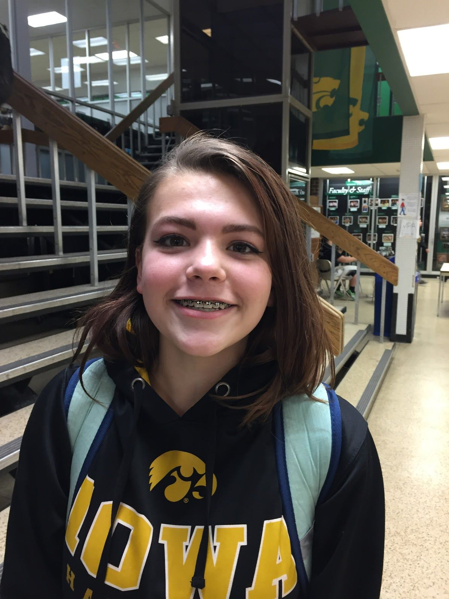

Q: Are you in any clubs or activities?
A: I am in GSA
Q: What is one thing you like about Kennedy?
A: The people are usually pretty accepting
Q: anything else you like about the people?
A: They are usually pretty open and friendly. If not, they just keep to themselves
Q: What do you think about Kennedy as a whole?
A: It’s good
Q: Whats one thing you would add or change?
A: Bring smart lunch back.
Elise Woolison
Do sports and get involved
Kiana Clark and Carmen Wolf - Seniors
Coach White is my favorite teacher because he makes class fun and easy to learn
Kelsey Whitmore - Senior
My most memorable moment was when I started modeling.
Modeling is important to me it’s the start of what I really want to do with my life
Sarah Beauregard - Senior
The darkest moment of my life was when I realised I would never get to meet my dad.
Name N/A
If I could talk to my freshman self I would tell them that you should never ever
procrastinate on things, because that's like one of the biggest issues we all have.
Name N/A

My biggest fear is having a death in the family.
Name N/A
My most memorable moment from my high school experience is when i was hanging out with my friends cause my friends are the best.
Thanh Nguyen - Junior
If i could one thing about kennedy, I would want to change the amount of freedom you have because the freshman should have more freedom.
Kylie - Freshman